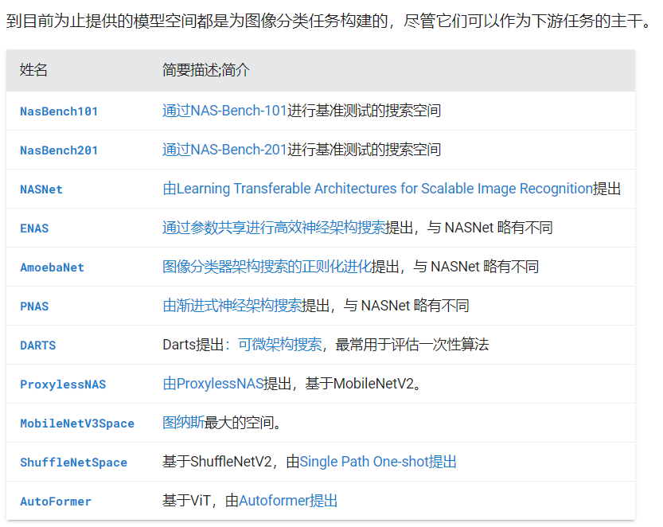
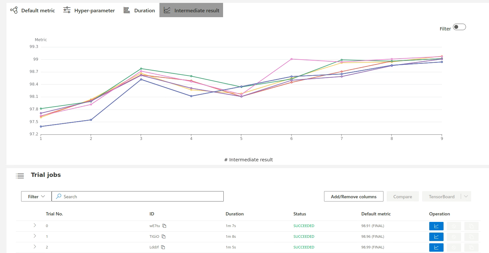
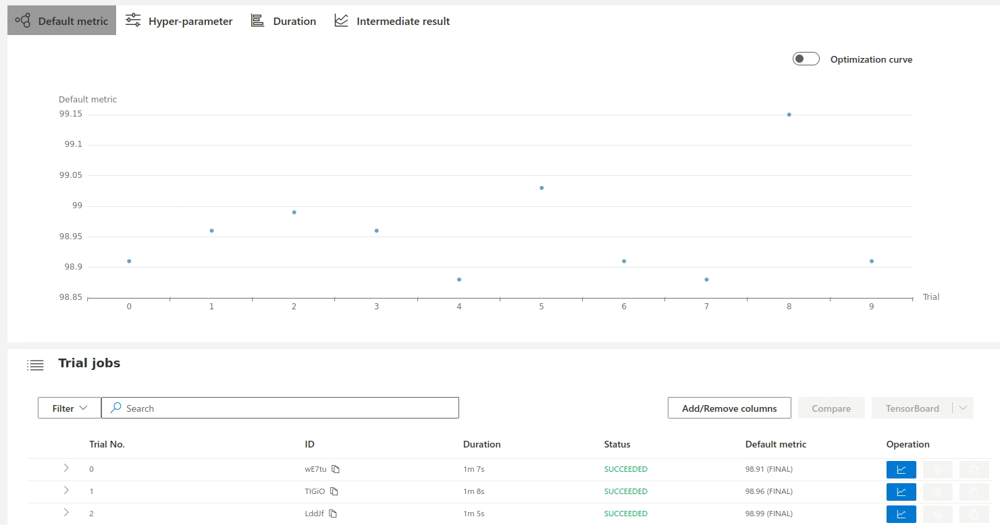

NNI神经架构搜索¶
1.模型空间¶
NNI支持的模型空间有：

import torch
from nni.nas.hub.pytorch import MobileNetV3Space
from torch.utils.data import DataLoader
from torchvision import transforms
from torchvision.datasets import ImageNet
# Load one of the searched results from MobileNetV3 search space.
mobilenetv3 = MobileNetV3Space.load_searched_model(
'mobilenetv3-small-100', # Available model alias are listed in the table below.
pretrained=True, download=True # download and load the pretrained checkpoint
)
# MobileNetV3 model can be directly evaluated on ImageNet
transform = transforms.Compose([
transforms.Resize(256, interpolation=transforms.InterpolationMode.BICUBIC),
transforms.CenterCrop(224),
transforms.ToTensor(),
transforms.Normalize(mean=[0.485, 0.456, 0.406], std=[0.229, 0.224, 0.225])
])
dataset = ImageNet('/path/to/your/imagenet', 'val', transform=transform)
dataloader = DataLoader(dataset, batch_size=64)
mobilenetv3.eval()
with torch.no_grad():
correct = total = 0
for inputs, targets in dataloader:
logits = mobilenetv3(inputs)
_, predict = torch.max(logits, 1)
correct += (predict == targets).sum().item()
total += targets.size(0)
print('Accuracy:', correct / total)
2.搜索策略¶
Multi-trial(多试验策略)¶
在模型空间中独立训练每个采样模型。多试验 NAS 意味着模型空间中的每个采样模型都是独立训练的。典型的多试验NAS是NASNet。在多试验 NAS 中，用户需要模型评估器来评估每个采样模型的性能，并且需要一种探索策略来从定义的模型空间中采样模型。在这里，用户可以使用 NNI 提供的模型评估器或编写自己的模型评估器。他们可以简单地选择一种探索策略。高级用户还可以定制新的探索策略。
import nni.nas.strategy as strategy
exploration_strategy = strategy.Random(dedup=True)
One-shot(一次性策略)¶
从超级模型中对模型进行采样。一次性 NAS 算法利用神经架构搜索空间中模型之间的权重共享来训练超级网络，并使用该超级网络来指导选择更好的模型。与从头开始独立训练每个模型（我们称之为“多试验 NAS”）相比，这种类型的算法大大减少了计算资源。
import nni.nas.strategy as strategy
import nni.nas.evaluator.pytorch.lightning as pl
evaluator = pl.Classification(
# Need to use `pl.DataLoader` instead of `torch.utils.data.DataLoader` here,
# or use `nni.trace` to wrap `torch.utils.data.DataLoader`.
train_dataloaders=pl.DataLoader(train_dataset, batch_size=100),
val_dataloaders=pl.DataLoader(test_dataset, batch_size=100),
# Other keyword arguments passed to pytorch_lightning.Trainer.
max_epochs=10,
gpus=1,
)
exploration_strategy = strategy.DARTS()
3.模型评估器¶
模型评估器用于训练和验证每个生成的模型。它们对于评估新探索的模型的性能是必要的。
自定义具有任何功能的评估器¶
from nni.nas.evaluator import FunctionalEvaluator
from nni.nas.experiment import NasExperiment
def fit(model, dataloader):
train(model, dataloader)
acc = test(model, dataloader)
nni.report_final_result(acc)
# The dataloader will be serialized, thus ``nni.trace`` is needed here.
# See serialization tutorial for more details.
evaluator = FunctionalEvaluator(fit, dataloader=nni.trace(DataLoader)(foo, bar))
experiment = NasExperiment(base_model, lightning, strategy)
使用评估器来训练和评估模型¶
# Class definition of a model space, for example, ResNet.
class MyModelSpace(ModelSpace):
...
# Mock a model instance
from nni.nas.space import RawFormatModelSpace
model_container = RawFormatModelSpace.from_model(MyModelSpace())
# Randomly sample a model
model = model_container.random()
# Mock a runtime so that `nni.get_next_parameter` and `nni.report_xxx_result` will work.
with evaluator.mock_runtime(model):
evaluator.evaluate(model.executable_model())
with model_context(exported_model_dict):
model = MyModelSpace()
# Then use evaluator.evaluate
evaluator.evaluate(model)
# 或者使用
# MyModelSpace().freeze(exported_model_dict)
4.常用命令¶
4.1 运行¶
在第一次进行搜索的时候，需要敲命令生成搜索空间文件，这里我将其命名为ss.json
nnictl ss_gen --trial_command="python3 mnist.py" --trial_dir=./ --file=ss.json
编辑config_random_search.yml，设置searchSpacePath的具体路径：
authorName: default
experimentName: example_mnist
trialConcurrency: 1
maxExecDuration: 1h
maxTrialNum: 10
#choice: local, remote, pai
trainingServicePlatform: local
#please use `nnictl ss_gen` to generate search space file first
searchSpacePath: ss.json
useAnnotation: False
tuner:
codeDir: ../../tuners/random_nas_tuner
classFileName: random_nas_tuner.py
className: RandomNASTuner
trial:
command: python3 mnist.py
codeDir: .
gpuNum: 0
运行nas
nnictl create --config config_random_search.yml
结果：


4.2 区别¶
Tuner和Sampler都是用于自动调整模型超参数的组件，但它们的使用场景和功能有所不同
Tuner：Tuner主要用于神经网络模型的超参数优化。它提供了一种机制，可以自动地搜索最优的超参数组合，以提高模型的性能。Tuner可以根据前面试验的结果来调整后续试验的超参数，从而实现更有效的搜索。NNI提供了多种预定义的Tuner，如网格搜索、随机搜索、贝叶斯优化等，同时也支持用户自定义Tuner。Sampler：Sampler是NNI在v2版本中引入的新概念，主要用于更广泛的自动机器学习（AutoML）场景，包括但不限于超参数优化。Sampler可以用于从给定的搜索空间中采样超参数，但它不会根据前面试验的结果来调整采样策略。Sampler更加通用，可以用于任何需要从某个空间中进行采样的场景，而不仅仅是超参数优化。